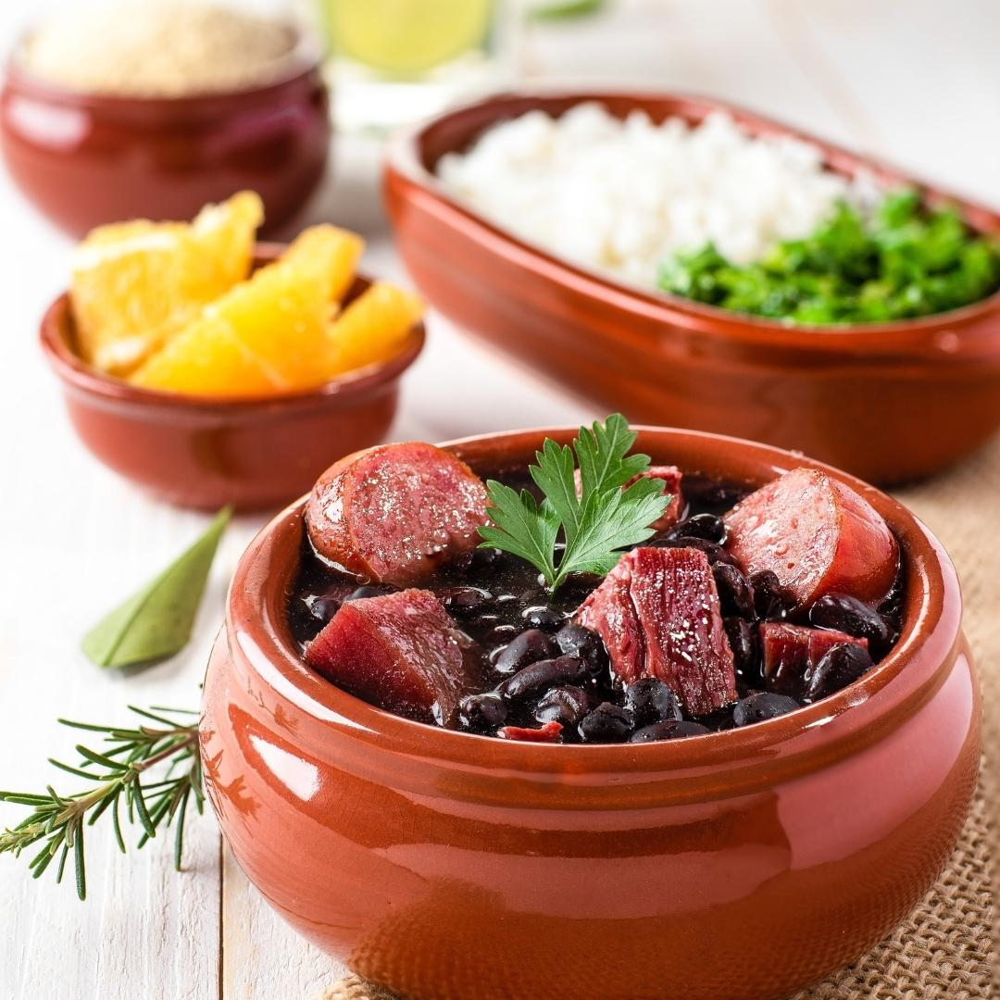

Ingredientes
- 500g de feijão preto
- 200g de carne seca
- 200g de costelinha de porco
- 150g de paio
- 150g de linguiça calabresa
- 2 folhas de louro
- 1 cebola picada
- 2 dentes de alho picados
- Sal e pimenta-do-reino a gosto
Modo de Preparo
Deixe o feijão e as carnes de molho por 12 horas.
Cozinhe o feijão com as carnes em panela de pressão por 40 minutos.
Refogue a cebola e o alho e adicione ao feijão.
Acerte o sal, adicione as folhas de louro e deixe ferver por 10 minutos.
Sirva com arroz branco, couve refogada e laranja fatiada.